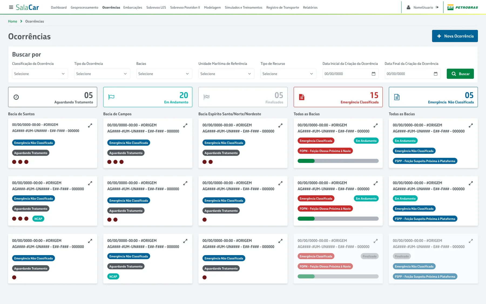
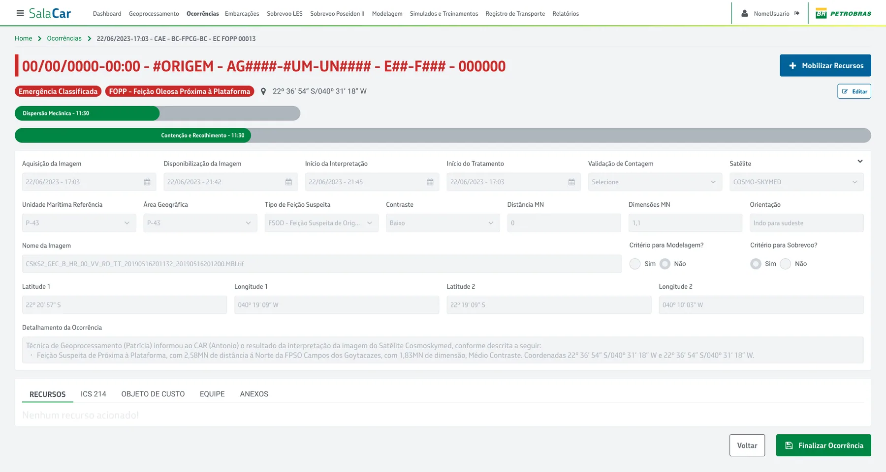
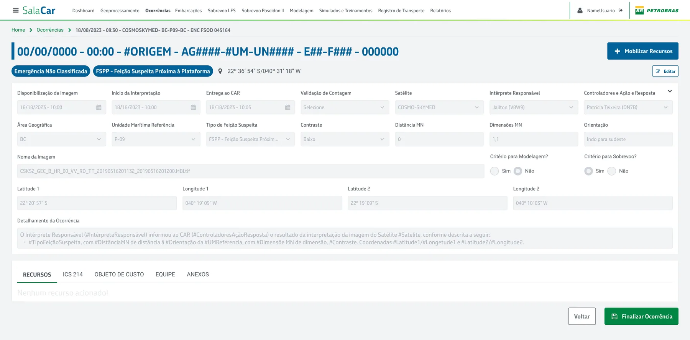
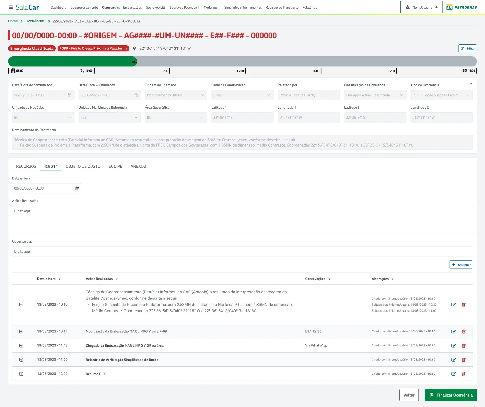
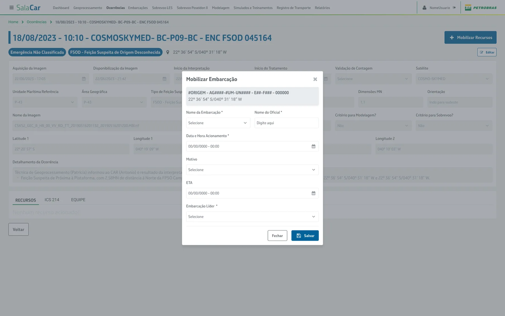
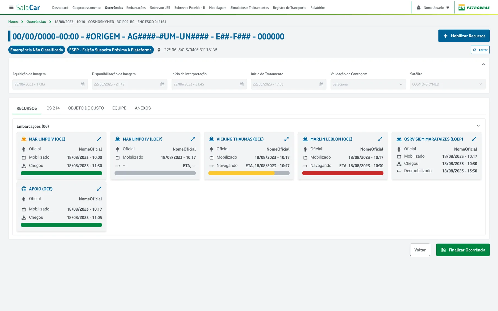
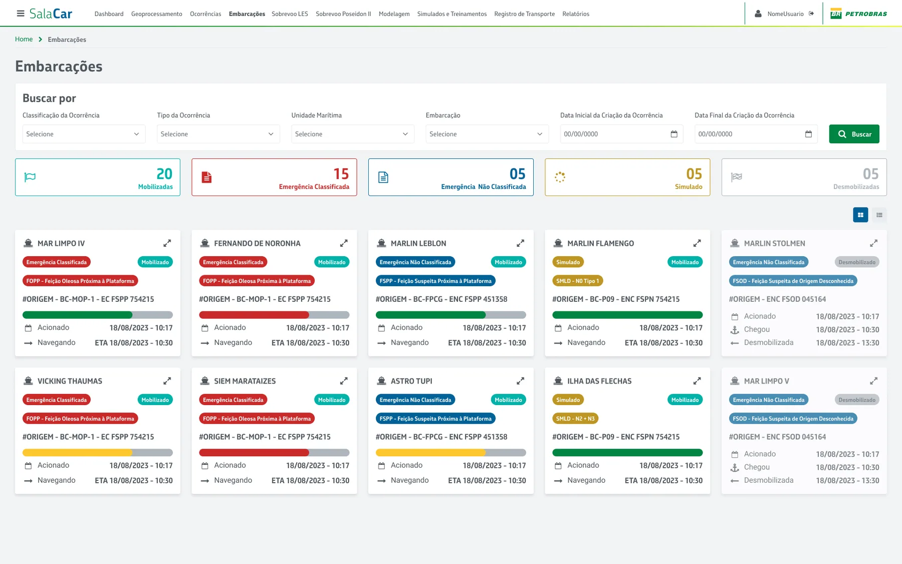
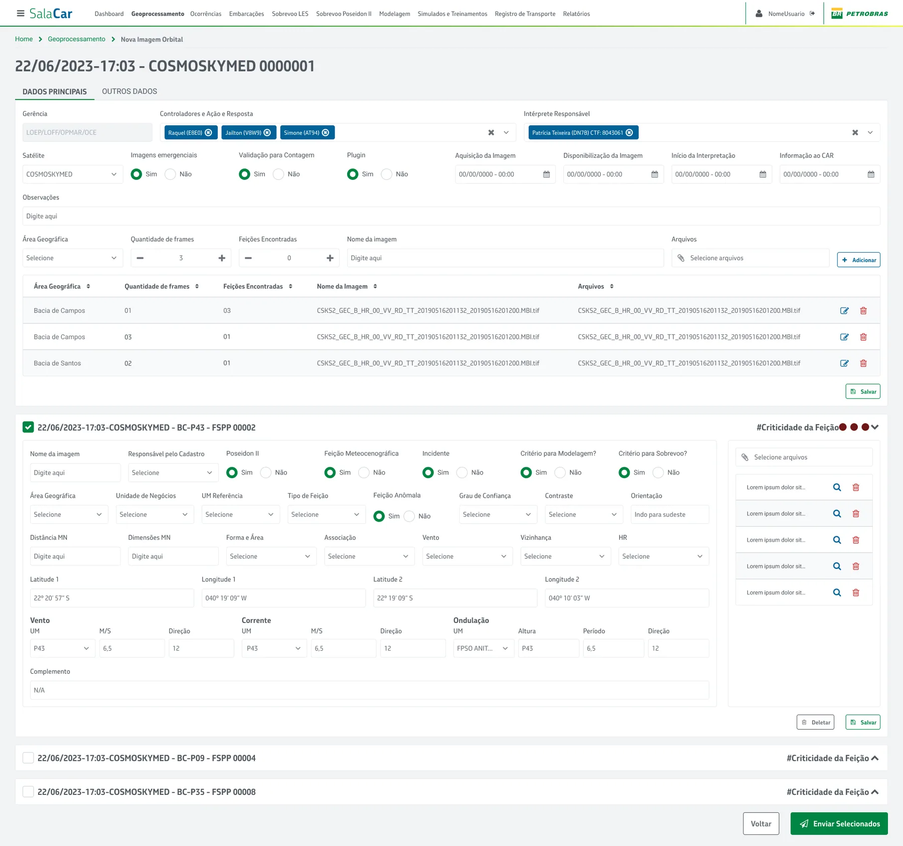

Arquitetura centrada na ocorrência
Organizar todo o sistema em torno do evento de ocorrência.
Sistema de gestão de ocorrências ambientais offshore. Coordenação em tempo real entre equipes operacionais, dados geoespaciais e obrigações regulatórias em operações de petróleo e gás.
Informações do Projeto
Projeto desenvolvido para apoiar equipes responsáveis pelo monitoramento e resposta a incidentes ambientais.
Mais do que um projeto de interface, este trabalho envolveu compreender como uma operação crítica funciona no dia a dia.
O SALA CAR organiza o ciclo completo de uma ocorrência ambiental: da detecção à resposta, da classificação ao encerramento regulatório.
Operações de petróleo offshore estão sujeitas a regulações ambientais federais que exigem monitoramento contínuo, registro de ocorrências e capacidade de resposta documentada.
Qualquer evento precisa ser registrado, classificado, tratado e encerrado com rastreabilidade completa, envolvendo técnicos nas plataformas, analistas em terra, coordenadores e gestores de conformidade.
Sete canais independentes podiam originar uma ocorrência ambiental.
Informações sobre um único incidente podiam estar distribuídas em planilhas locais, e-mails, sistemas legados de diferentes áreas e PDFs gerados manualmente.
O ICS 214 registrava a cronologia. Planilhas controlavam recursos. Relatórios técnicos consolidavam análises geoespaciais. Nenhum desses registros compartilhava uma estrutura operacional comum.
A estrutura isolada limitava o compartilhamento de contexto operacional.
O problema não era falta de dados — a operação já produzia informação suficiente.
A fragmentação gerava atrasos na classificação de incidentes, esforço duplicado no registro, risco de resposta descoordenada e exposição regulatória.
O gargalo estava na energia gasta para cruzar dados dispersos sob pressão de tempo.
Atuei no mapeamento dos fluxos e no desenho das interfaces unificadas, traduzindo o ciclo de resposta em uma arquitetura de produto robusta.
Organizar todo o sistema em torno do evento de ocorrência.
Definir entidades para monitoramento, mobilização, cronologia e encerramento.
Transformar o registro cronológico em eixo de navegação e auditoria.
Embarcar ferramentas de mapa diretamente no fluxo operacional.
Prototipar interfaces críticas para técnicos e gestores.
Ler artefatos legados para fundamentar decisões.
Condições que limitaram a solução e orientaram as decisões de arquitetura.
Propus reorganizar o sistema usando a ocorrência como unidade central do fluxo de trabalho. Todas as dimensões de um incidente passam a viver no mesmo contexto.
Ciclo operacional estruturado:
A sequência de telas estrutura o monitoramento operacional, a mobilização de embarcações e a análise contextual por mapas.

A listagem deixou de ser apenas uma tabela e passou a consolidar classificação de risco, tamanho estimado da mancha e recursos alocados.


Detalhes e classificação estruturada da emergência ambiental com integração de dados de origem do geoprocessamento.

O log de eventos foi inserido na navegação central do incidente para gerar rastreabilidade nativa.


Seleção, simulação e confirmação visual de embarcações envolvidas na resposta operacional.

Painel consolidado com embarcações disponíveis, capacidade operacional e posição de monitoramento.

Ferramenta de mapa tempo real no tratamento do incidente.
Limitações técnicas e regulações exigiram manter alguns fluxos temporariamente externos ou dependentes de processos manuais.
Integrações com sensores satelitais herdados permaneceram em canais paralelos e o fechamento formal do relatório regulatório ainda exigia formulários no ambiente governamental.
A unificação das informações reduziu o custo de reconstrução do contexto e permitiu às equipes agir com mais agilidade e segurança jurídica.
Automação de relatórios operacionais e redução de planilhas fragmentadas.
Ciclo completo de discovery e arquitetura.
Fontes de monitoramento integradas em um único hub.
Trilha de auditoria do sinal inicial ao encerramento formal da ocorrência.
O maior aprendizado foi sobre modelagem antes de design. Telas sem um modelo claro de entidades e estados viram um mapa sem território.
Entender o domínio operacional antes de qualquer wireframe tornou as decisões de interface defensáveis.